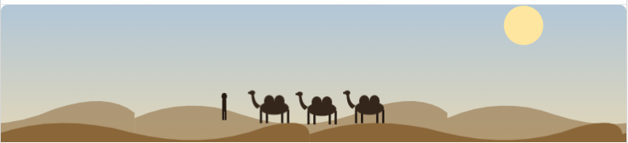
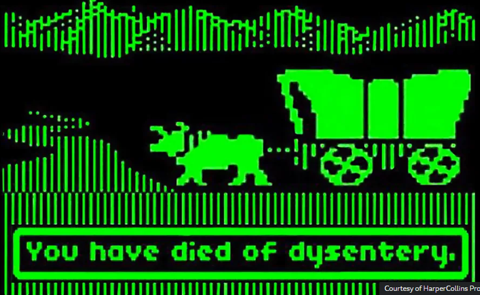
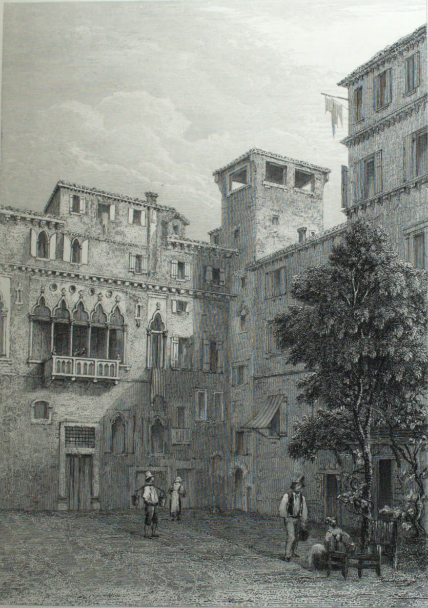
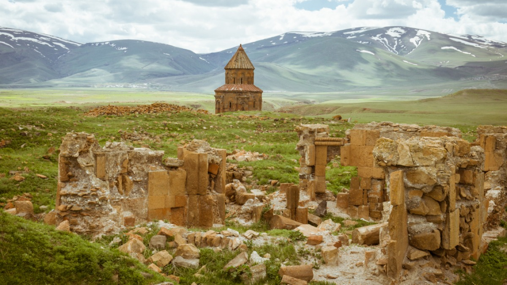
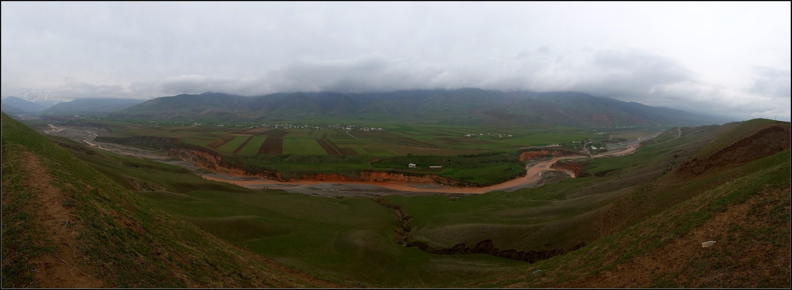

Journeys in Time
Text of the entry

Journeys in Time
1994 – You file into the computer lab with your fellow primary school students. It’s a room in the middle of the building, without external windows. Banks of heavy monolithic Apple computers sit on desks. You and your friends hurry to get some computers side-by-side.
There’s a few disks to choose from, but who wants to play “Number Munchers” or “Lemonade Stand” – “Odell Lake” isn’t bad but there’s only one game everyone really wants to play – “Oregon Trail.”
You insert the square floppy disk into the slot and it loudly clicks into place, followed by some loud whirring. The familiar game introduction screen appears in glowing green monochrome. Soon you are naming your wagon party after your friends, and you’re off down the trail. Your wagon trundles along in its simple animation. Oh no “Gary has died of dysentery!”
All too soon the discordant grating buzzer sounds throughout the school - the hour of computer lab is up, and you haven’t finished the game! Unfortunately there’s no way to save, reluctantly, you shut down the game, left with just the feeling of a journey incomplete. Back to the main classroom for math time.
I never did beat Oregon Trail --always ran out of time. And not having beat it always bothered me. I actually have tried to play a few times in more recent years but every version I’ve found online has been really buggy and failed to present the whole game (most recently when one had to change the disk halfway through there seemed to be no way to continue the game, despite this was playing off a copy on the internet with no disks involved).
If you were to follow the ancient Silk Road east out of Europe across a thousand miles of grassy plains, through Turkmenistan, Uzbekistan and Tajikistan, north of Afghanistan and south of Kazakhstan, the “Mountains of Heaven” would rise up like a serrated wall before you. You would journey into their imposing embrace in the broad and fertile Fergana Valley, at the end of which lies the 3,000-year-old city of Osh, You have arrived in Kyrgyzstan.
Thus begins one of my favorite openings to an article I’ve had published (actually the article that “re-launched” my writing career, 7 years after my last published article). I’ve always loved history and travel, and so the Silk Road has always interested me. And, specifically, when I thought about the Silk Road I would often think one could make a really cool game just like the Oregon Trail, but on the Silk Road.

Some weeks ago the “Fable” model of Claude AI was released, I wanted a
demonstration of its capabilities but unfortunately most of what I might want from it were creating models of bee mite population growth and such, and Fable would not talk to me about anything biology related, that’s all Forbidden Knowledge. But people on Twitter were talking about how it “one shotted” making a tacky minecraft clone for them (kind of dumb brag really, it can discern how any previous game was made and so of course it can “one shot” a remake of it). But that gave me an idea!
I asked Fable to make said Silk Road Oregon Trail game, and verily, it did produce the basic game. But that was only the beginning of my journey. I bought up silk and tea in Chang’an and set out west with my generic camels, and alas I died of thirst somewhere in the Taklamakan Desert. Start again and the journey continues and continues, as I added more and more details--generic camels expanded first into distinct bactrians, dromedaries, and I learned there’s a hybrid type between them, horses, mules and donkeys, and eventually yaks and, as I forged a muddy trail along the historic Grand Trunk Road through India, water buffalos (taking them into the desert is NOT advised).
It began with just silk, tea, paper, musk and jade. As my later caravans made their way through the Hexi Corridor toward another attempt. I discovered rhubarb was actually a historical product traded from that area west all the way to the Levant (via obsessively reading sources on the locations already included). Bypassing the Tarim Basin to the north this time, I discovered a
Chinese wine region in Turfan, and pressed on around the mountains to the north through the blasting winds of the Dzungarian Gate. This northern pass is harsh at the best of times, but I also made it climate aware, plugging in climate models to accurately depict what weather you’d encounter where based on actual data (this also touched too closely on Forbidden Knowledge and Fable refused to help). Don’t venture northern routes in winter without fur coats and if you need to cross the mountain passes it may be best to wait in Samarkand, nor is summer the best time to cross the deserts.

Onward my snorting bactrians trudged across the endless steppes of Transoxiana, and I discovered the value of lapis, turqoise, and saffron. Ultimately 50 trade goods were introduced
(not flooding any given trade menu by the simple expedient of not displaying what neither you nor they happen to have), so you can trade everything from frankincense to nutmeg to asbestos.
I faced a grim choice on one real traded “commodity” – slaves were traded along the Silk Road. Ultimately I decided not to shy away from the grim reality, you can buy slaves, but they will always have a name and a personal story, and my favorite twist, if you are attacked by bandits while you have slaves and you try to flee, they will rescue your slaves, leaving you decidedly not the good guy. (And if you lose to bandits while you have slaves, they will sell you into slavery, which not only ends your game, but the next time you play the first slave you buy will have your former name muahahaha). At last, after embarking in Antioch and sailing the last bit, I arrived at Constantinople in the west!
usually only deal with himself and maybe the doings of the Great Khan – it was only as I was implementing historical events did I realize the 10th Crusade was in full swing when he was in the Levant, he would have been dodging rival armies in the area and probably met Edward Longshanks, of Braveheart infamy, who was leading the crusade (and you can meet him too 😉 ). I realized also Osman the founder of the Ottoman dynasty was then the 13 year old heir of a local chief in Anatolia, and would likely be in the Seljuk capital of Konya where players might encounter him, and so you might. Also, while traveling in the Levant the player may encounter moving armies where they were (generally not great for a caravan) arrive at a city under siege or, worse, be caught within one, all set by history. Avoid that mess by going north of the Caspian Sea and find out why Ibn Battuta complained bitterly about the hardships of that route.

The historical date Fable first chose was 762 AD and I’ve kept that as playable but I was more interested in and more fully fleshed out the era beginning the day before Marco Polo sets out from Venice in 1271. First and most important was tracing his exact route and plugging it in, so you can bump into him in the place he should historically be at any given time or on the road between places, which I’ve found really fun, and when he rests for a year in Badakhshan about halfway, just before the most arduous crossing of the mountains, now I’m like “same, man, same.”
But what was really interesting for me is accounts of Marco Polo’s travels
And finally, I think most interestingly for our purposes here, as I trekked eastward out of Anatolia, past the ruined city of Ani, with its cathedral standing amid the rubble, it occurred to me that what I wanted, the whole point really, is the sense of a story. If you made this journey, at the end you’d remember your companions as well as
the sights you saw. So I gave as many of the characters potential plot arcs as I could think of. Arrive in Tabriz with Emmanuele Kalergis, the wine merchant from Crete and he’ll admire the noted local winemaking. The Ragusan beekeeper will note beekeeping related sights. Get the Venetian and Genoese crossbowmen both in your party and watch the rivalry. Some characters don’t know it yet but the love of their life awaits them in some distant place beyond the horizon. And the slaves too, this was particularly important to me, have hopes and aspirations. You can set them free, and they may or may not ask to join your party as a paid member (if you were nice to them and they are far from home), but then also may leave your party if you take them past their hometown, a place where they can practice their old profession, or something else causes them to want to stay.
My Kyrgyzstan article continues from the previous blockquote:
Once, caravans of snorting camels had stopped here to prepare to cross the mountains, but now it is dusty and post-soviet, full of crumbling monuments and grey apartment blocks. A statue of Lenin still graces a central square, his hand outstretched as if to say “look upon my works!” but you turn your back on him and head toward the mountains, past a prouder, more modern statue of Kyrgyz folk hero Manas astride his horse holding his sword valiantly aloft. Follow the approximate route of the Silk Road for two more hours by car up winding roads surrounded by increasingly large green hills, occasionally waiting for shepherds on horseback to move their sheep off the road, until you come to a village named Kenesh beside the icy Kara Darya river.
The river valley seems stark and empty in the cold of early Spring. Other than the village and river, there is nothing in sight but grass and distant herds of sheep or horses. The “Mountains of Heaven,” the Tian Shan, loom at one end, and the Fergana Valley at the other. The village itself consists of a smattering of dusty off-white houses punctuated with cheery red or blue hand-carved wooden scrollwork along the eaves. Each house has its own yard delineated by a rustic fence of rough branches, and each yard contains a kitchen garden, some fruit trees in the very beginnings of blossom, the family horses and maybe a cow or two. Some sheds and barns are actually thatched. The car rolls into one such yard, I walk past a row of strangely large beehives set under some cherry trees resplendent with pinkish-white blossoms; I have arrived at my destination.

I obsessed about the exact routes. Published maps generally just give vague swoops of the Silk Road route but a surprising number of papers detailing very specific routes in given areas came to light in obscure hyper specific peer reviewed journals, and I set up a least-elevation-change routefinding algorithm to plot between known waypoints. One thing that amazed and delighted me is I discovered the village I had stayed in in Kyrgyzstan wasn’t just “on the Silk Road” in a vague within-50-km sense, it literally went up that valley, probably within a dozen meters of the room in which I slept.
Among the final touches I added to the game were finally making it all 3d, and the ability to use wagons in places where camels aren’t available (camels are more efficient than wagons it turns out). I mainly wanted wagons as an homage to Oregon Trail and when I opened up the Grand Trunk Road through India finally I had the excuse I’d needed (the humidity kills camels).
For the longest time it was just me and specific known friends I’d talked into
Play below, or play the general game here:
playtesting it but at least one mysterious person, naming their character RugOne through RugElevan has played what must be at least dozens of hours of it! I’m dying to know who they are and from whence they wandered across my game!
In the future, in order, I would like to (1) finish an “amber road” extension where you travel from Scandinavia to Constantinople via inland rivers, which alreay has basic functionality but I haven’t had time to playtest and refine it much at all; (2) make it so you can start in 1266 and instead cross paths with Marco Polo’s father and uncle; (3) make 14th century Ibn Battuta setting; (4) Make an “End of the Silk Road” version where you set out from Lisbon in 1498 at the same time Vasco de Gama is setting out by sea, beat him to India and back.
But first, I made an LJ Idol themed setting. It autopopulates your party with current season LJ Idol contestants (skills randomized) and the tavern in Samarkand has been renamed the Green Room, this time you’ll have to travel a long way for the sacriligious Green Room party!
Play The Silk Road — play it here, or open it in its own window
Links in the entry
- http://virtualani.org/
- https://en.wikipedia.org/wiki/Dzungarian_Gate
- https://en.wikipedia.org/wiki/Hexi_Corridor
- https://krisfricke.github.io/Silk-Road/
- https://krisfricke.github.io/portfolio/article/abj-2019-06/
This is the plain-text version, extracted from the laid-out pages for readers who use screen readers, text-only browsers, or prefer reflowable text. The typeset pages are in the reader; the same entry is on LiveJournal and Dreamwidth.